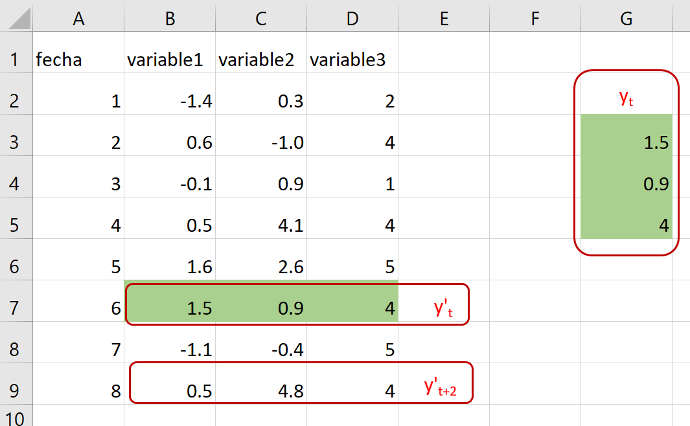

\[ \begin{align}\begin{aligned}\require{color}
\newcommand{\alert}[1]{{\color{RedOrange} #1}}
\newcommand{\notation}[2]{\underset{\color{MidnightBlue}\text{#2}}{#1}}
\newcommand{\simbolo}[2]{\underset{\color{MidnightBlue}#2}{#1}}
\newcommand{\notationbrace}[2]{{\underbrace{#1}_{\color{MidnightBlue}\text{#2}}}}
\DeclareMathOperator{\dd}{\,d\!}
\DeclareMathOperator{\E}{\mathbb{E}{}}
\DeclareMathOperator{\Var}{Var{}}
\DeclareMathOperator{\Cov}{Cov{}}
\DeclareMathOperator{\Lag}{L{}}
\DeclareMathOperator*{\argmin}{argmin}
\DeclareMathOperator*{\argmax}{argmax}
\DeclareMathOperator{\Prob}{\mathbb{P}}
\newcommand{\marginal}[2]{\frac{\partial #1}{\partial #2}}
\newcommand{\MAT}[1]{\begin{bmatrix} #1 \end{bmatrix}}
\newcommand{\mat}[1]{\left[\begin{smallmatrix} #1 \end{smallmatrix}\right]}\\\begin{split}\DeclareMathOperator{\R}{\mathbb{R}}
\DeclareMathOperator{\X}{\mathbf{x}}
\DeclareMathOperator{\y}{\mathbf{y}}
\DeclareMathOperator{\h}{\mathbf{h}}
\newcommand{\stackEq}[1]{\MAT{#1_1 \\ #1_2 \\ \vdots \\ #1_M}}
\newcommand{\e}{\mathbf{\epsilon}}
\newcommand{\Y}{\mathbf{Y}}
\newcommand{\estimator}[2]{{\hat{#1}^{\text{#2}}}}
\newcommand{\estimate}[2]{\underset{(#2)}{#1}}
\DeclareMathOperator{\plim}{plim}
\newcommand{\PLIM}[2]{#1\xrightarrow{p} #2}\end{split}\end{aligned}\end{align} \]
3.4. Representaciones alternativas de un VAR
Las series de tiempo
En lo que sigue, asumimos que hay \(n\) series de tiempo.
La observación \(t\) se denota \(y_t\), corresponde a un vector columna con \(n\) datos (uno por cada serie)

Distintos “sabores” de VAR
En general, hay tres variedades de VAR:
VAR en forma reducida
VAR recursivo
VAR estructural
Se distinguen por cómo se presentan las relaciones contemporáneas entre las variables.
El proceso VAR(p) estructural
El VAR estructural es similar al reducido, pero las variables tienen relación contemporánea.
Para determinarla, se usa teoría económica.
Se requiere de supuestos de identificación que permitan interpretar correlaciones como causalidad.
Se representa como
\[\begin{equation*}
\Gamma_0y_t = d + \Gamma_1y_{t-1} + \Gamma_2y_{t-2} +\dots + \Gamma_py_{t-p} + \varepsilon_t
\end{equation*}\]
donde \(\Gamma_j\) es la matriz \(n\times n\) de coeficientes del rezago \(j\).
El término de error cumple:
\[\begin{equation*}
\E\varepsilon_t=0 \qquad\Cov[\varepsilon_{it},\varepsilon_{js}] = \begin{cases}
\sigma_{ij}^2, &\text{ si } t=s \\
0, &\text{de lo contrario.}
\end{cases}
\end{equation*}\]
Pasando de un VAR estructural (o recursivo) a uno reducido
Si la matriz \(\Gamma_0\) es invertible (lo que está garantizado en el VAR recursivo), entonces se puede obtener el VAR reducido así:
\[\begin{align*}
\Gamma_0y_t &= d + \Gamma_1y_{t-1} + \dots + \Gamma_py_{t-p} + \varepsilon_t \\
y_t &= \Gamma_0^{-1}d + \Gamma_0^{-1}\Gamma_1y_{t-1} + \dots + \Gamma_0^{-1}\Gamma_py_{t-p} + \Gamma_0^{-1}\varepsilon_t \\
&=c + \Phi_1y_{t-1} + \Phi_2y_{t-2} +\dots + \Phi_py_{t-p} + \epsilon_t
\end{align*}\]
Las matrices de covarianza cumplen
\[\begin{equation*}
\Omega = \Gamma_0^{-1}\Sigma{\Gamma'}_0^{-1}
\end{equation*}\]
La descomposición de Cholesky
Recuerde que
\[\begin{equation*}
\Sigma = \MAT{\sigma_1^2 & 0 &\dots & 0 \\ 0 & \sigma_2^2 &\dots & 0 \\ & & \ddots & \\ 0 &0&\dots &\sigma_n^2} \Rightarrow \qquad \Sigma^{1/2} = \MAT{\sigma_1 & 0 &\dots & 0 \\ 0 & \sigma_2 &\dots & 0 \\ & & \ddots & \\ 0 &0&\dots &\sigma_n}
\end{equation*}\]
Así
\[\begin{equation*}
\Omega = \left[\Gamma_0^{-1}\Sigma^{1/2}\right] \left[\Gamma_0^{-1}\Sigma^{1/2}\right]'
\end{equation*}\]
En el caso de un VAR recursivo, \(\Gamma_0\) es tringular inferior, y por tanto \(\Gamma_0^{-1}\Sigma^{1/2}\) también lo es.
Así, hemos obtenido la descomposición de Cholesky de \(\Omega\).
Ejemplo:
Descomposición de Cholesky
\[\begin{equation*}
\Omega = PP' = \left[\Gamma_0^{-1}\Sigma^{1/2}\right] \left[\Gamma_0^{-1}\Sigma^{1/2}\right]' = \Gamma_0^{-1}\Sigma{\Gamma'}_0^{-1}
\end{equation*}\]
Si \(y'_t=\MAT{m_t & r_t & k_t}\) y la matriz de covarianza reducida es
\[\begin{align*}
\Omega = \MAT{1 & 0.5 & -1 \\ 0.5 & 4.25 & 2.5\\ -1 & 2.5 & 12.25}
&=\notation{\MAT{1 & 0 & 0\\ 0.5 & 2 & 0\\-1 & 1.5 & 3}}{$P$}
\notation{\MAT{1 & 0.5 & -1\\ 0 & 2 & 1.5 \\0 & 0 & 3}}{$P'$} \\
&=\notation{\MAT{1 & 0 & 0\\ 0.5 & 1 & 0\\-1 & 0.75 & 1}}{$\Gamma_0^{-1}$}
\notation{\MAT{1 & 0 & 0\\ 0 & 4 & 0 \\0 & 0 & 9}}{$\Sigma$}
\notation{\MAT{1 & 0.5 & -1\\ 0 & 1 & 0.75 \\0 & 0 & 1}}{${\Gamma'}_0^{-1}$}
\end{align*}\]
Por lo que
\[\begin{equation*}
\Gamma_0 = \MAT{1 & 0 & 0\\ -0.5 & 1 & 0\\1.375 & -0.75 & 1}
\end{equation*}\]
Entonces \(\sigma^2_r = 4\) y un aumento de una unidad en \(m_t\) provoca una disminución contemporánea de 1.375 en \(k_t\).
VAR(p) escrito como VAR(1)
\[\begin{equation*}
\simbolo{\MAT{\hat{y}_t \\ \hat{y}_{t-1} \\ \hat{y}_{t-2} \\ \vdots \\ \hat{y}_{t-p+1}}}{\hat{Y}_t} =
\simbolo{\MAT{\Phi_1 & \Phi_2 & \Phi_3 &\dots & \Phi_{p-1} & \Phi_p\\
I & 0 & 0 &\dots & 0 & 0\\
0 & I & 0 & \dots &0 & 0 \\
& & & \ddots & & \\
0 & 0 & 0 &\dots &I &0}}{\Phi}
\simbolo{\MAT{\hat{y}_{t-1} \\\hat{y}_{t-2} \\\hat{y}_{t-3} \\ \vdots \\\hat{y}_{t-p}}}{\hat{Y}_{t-1}} +
\simbolo{\MAT{\epsilon_t \\0 \\0 \\ \vdots \\0 }}{\xi_t}
\end{equation*}\]
Entonces
\[\begin{equation*}
\hat{Y}_t = \Phi \hat{Y}_{t-1} + \xi_t
\end{equation*}\]
Ejemplo:
{VAR(2) a VAR(1)}
El VAR(2)
\[\begin{equation*}
\MAT{x_t\\y_t} = \MAT{.5 & .1\\.4 & .5}\MAT{x_{t-1}\\y_{t-1}} +
\MAT{0 & 0\\.25 & 0}\MAT{x_{t-2}\\y_{t-2}} + \MAT{\epsilon_{xt}\\ \epsilon_{yt}}
\end{equation*}\]
se escribe como VAR(1)
\[\begin{equation*}
\MAT{x_t\\y_t\\ x_{t-1}\\y_{t-1}} =
\MAT{.5 & .1 & & 0 & 0 \\.4 & .5& &.25 & 0 \\ 1 & 0 & & 0 & 0\\0 & 1 & & 0 & 0}
\MAT{x_{t-1}\\y_{t-1}\\ x_{t-2}\\y_{t-2}} +
\MAT{\epsilon_{xt}\\ \epsilon_{yt}\\ 0 \\ 0}
\end{equation*}\]
Dinámica de un proceso VAR(1)
A menudo necesitamos iterar en la fórmula del AR(1) para analizar su dinámica.
En esos casos, es útil observar que:
\[\begin{equation*}
\left(1 + \Phi L + \Phi^2L^2 + \dots + \Phi^sL^s\right)\left(I-\Phi L\right) = \left(I-\Phi^{s+1} L^{s+1}\right)
\end{equation*}\]
Así, si queremos expresar \(\hat{Y}_t\) en términos de \(\hat{Y}_{t-s-1}\)
\[\begin{align*}
\left(I-\Phi L\right)\hat{Y}_t &= \xi_t \\
\left(I-\Phi^{s+1} L^{s+1}\right)\hat{Y}_t &= \left(1 + \Phi L + \Phi^2L^2 + \dots + \Phi^sL^s\right)\xi_t \\
\hat{Y}_{t} -\Phi^{s+1}\hat{Y}_{t-s-1} &= \xi_{t} + \Phi\xi_{t-1} +\dots+\Phi^s\xi_{t-s}
\end{align*}\]
Pasado versus futuro
Pasado
Cuando queremos analizar \(\hat{Y}_t\) en función de shocks pasados, utilizamos
\[\begin{equation*}
\hat{Y}_{t} = \xi_{t} + \Phi\xi_{t-1} +\dots+\Phi^s\xi_{t-s} + \Phi^{s+1}\hat{Y}_{t-s-1}
\end{equation*}\]
Futuro
Para analizar el efecto de nuevos shocks sobre futuros valores de \(\hat{Y}\), aplicamos \(L^{-s}\) a la última ecuación:
\[\begin{equation*}
\hat{Y}_{t+s} = \xi_{t+s} + \Phi\xi_{t+s-1} +\dots+\Phi^s\xi_{t} + \Phi^{s+1}\hat{Y}_{t-1}
\end{equation*}\]
VAR(1) escrito como VMA(\(\infty\))
\[\begin{equation*}
\hat{Y}_{t} = \xi_{t} + \Phi\xi_{t-1} +\dots+\Phi^s\xi_{t-s} + \Phi^{s+1}\hat{Y}_{t-s-1}
\end{equation*}\]
Si los eigenvalores de \(\Phi\) están en el círculo unitario el límite \(s\to\infty\) converge a
\[\begin{equation*}
\hat{Y}_t = \xi_t + \Phi\xi_{t-1} +\Phi^2\xi_{t-2} + \dots
\end{equation*}\]
{kind=link}